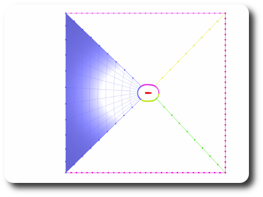

This tutorial demonstrates how to generate a structured
multiblock mesh around a 1D geometry.
If you don't have a 1D geometry, try this sample file: [Dowload sample file].
First go to 2D mode using Visu::tkView and set 'XY'.
Setting the point distribution
You first have to suit the point distribution to your need.
Open Edge::tkMapEdge. Perform
Enforce where you want, with the desired mesh size.
For instance, try to enforce 1.e-3 at the trailing edge
(shift+click on the second to last point).
Extrusion
Open Mesh::tkExtrusion. Set the height of the layers
to 5.e-2. Set the number of layers to 30. Select the profile and
click on Add layers.
Eventually, if the profile is badly oriented for extrusion and
the extruded mesh is growing in the wrong direction,
you can get it right: open
Block::tkReorder. Select I->-I and click on 'Reorder'.
The next steps of the tutorial
will show how to connect this mesh to an external given boundary.
TFIs
Extract the external boundary of previously extruded mesh. First open
Edge::tkExtractEdges. Then shift-click on
the previously extruded mesh, and select 'External Edges'
in the applet.
We will now create four TFI meshes.
Open Edge::tkDraw. Select 'Line' and 10 points
in the applet settings. Click on Draw and ctrl-click
on a mesh point of the graphics window to obtain a line
as on the Figure. To make the point selection easier, you can
deactivate the previously extruded mesh by shift+right-click on
it in the graphics window.
Repeat the procedure to obtain 4 lines:
We are going to split
the external boundary at line connection points.
Go back to Edge::tkExtractEdges.
Select the four lines and the external boundary of the
extruded mesh. Finally, click on 'SplitTBranches'.
We have then to copy the point distributions to make them match 2 to 2.
Go again to Edge::tkMapEdge.
Select an edge on the graphics window of the previously
extruded mesh, press the arrow next
to the copy button. Then, select
the opposite edge and press 'Copy'. Repeat the procedure
for the four parts of the split external boundary of the extruded
mesh.
Generate the meshes by shift+clicking on four boundaries and
press 'TFI' of the applet Mesh::tkTFI.

Select all blocks and smooth them as you wish with
Mesh::tkSmooth:Smooth.
Finally, add a stretching to capture the boundary layer.
Open Mesh::tkStretch. Select 'j indices'.
Set the Enforce setting to 1.e-4. Shift-click on the graphics
window on the mesh and near the wall. Finally, press Enforce.